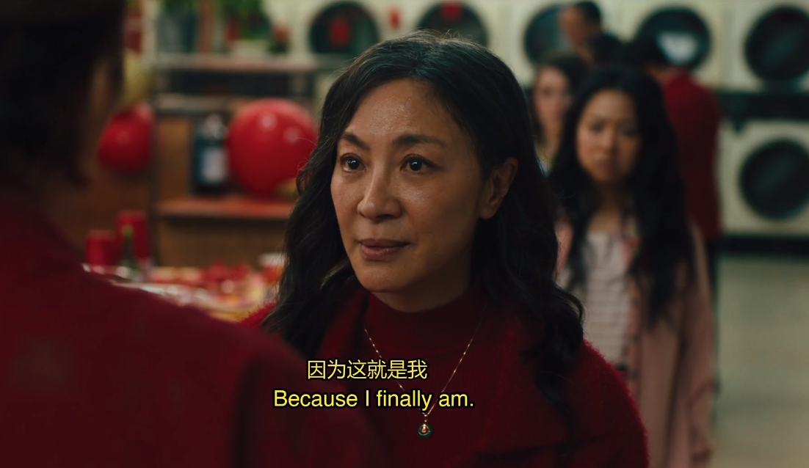

Movie Information
- Title
- Everything Everywhere All At Once
- Directors
- Daniel Scheinert, Daniel Kwan
- Genre
- Science Fiction, Comedy-Drama, Existentialism
- Starring
- Michelle Yeoh, Ke Huy Quan, Stephanie Hsu
Plot Summary
Evelyn is a Chinese-American who runs a laundromat. She has a paralyzed father in a wheelchair, a dull and uninteresting husband who wants a divorce, and a rebellious lesbian daughter that wants to introduce her girlfriend to the family. Evelyn is worried about filing taxes as her business is being audited by the IRS. In the passage of time, she has completely lost her own life. Then, she is informed that countless versions of herself in numerous parallel universes are facing a major crisis: a super villain called Jobu Tupaki is trying to kill them. As a result, Evelyn must gather the identities and abilities of all her alternate selves across these universes to save Jobu Tupaki who seeks to destroy everything including herself. The movie explores themes of love, family, self-discovery, and the interconnectivity of all things: meaning of life.
Character: Evelyn
Evelyn is the protagonist of this movie. She is 55 years old. In her early years, she eloped with her husband and left China for the United States. Now, she runs a laundromat.
On this day: it's her father's birthday, and a Lunar New Year party is going to be held in the laundromat. Her father is old and sickly, has difficulty moving around and is constantly nitpicking and demanding.
Her husband, Waymond, is weak and incompetent, unable to handle major responsibilities, and looking for an opportunity to bring up divorce with her. Their daughter, lacking ambition, dropped out of college, found a girlfriend, and is planning to bring her home to inform the family.
Evelyn is dealing with a pile of bills and needs to go to the IRS to file her taxes, or else the seizure of the laundromat will be authorized. As she steps into the elevator at the IRS building, her feeble husband unexpectedly claims to be Alpha Waymond from another universe and reveals that Evelyn is one of many versions of herself across millions of universes. He says that evil forces have spread across the multiverse, and the world is in danger. Only the "good-for-nothing" Evelyn from this universe has the power to save the world... In this universe, Evelyn is surrounded by countless trivial matters and full of anxiety. Her life is a failure. She is overwhelmed by a sense of meaninglessness. What about other universes?
The Action Star Universe is a universe where Evelyn did not elope with Waymond. Instead, she met a Kung Fu master and started to learn Kung Fu. Eventually, she became an action movie star. It seems that she is very successful here. However, she misses Waymond. She lost the one who always accompanies her.
In this universe, Evelyn works as a Hibachi chef; she discovers one of her co-workers, Chad, is secretly controlled by a raccoon, allowing him to become the professional chef he always wanted to be. While Chad wins Boss' favor and customers' claps, Evelyn is not able to do her job well and even might lose it. As a result, Evelyn reports the existence of the raccoon, and the raccoon is taken away from Chad.
This is a universe where human evolution followed a distinct path, leading to individuals having fingers resembling hot dogs filled with ketchup and mustard. In this universe, Evelyn is in a relationship with Deirdre, the IRS agent who is auditing her in the main universe. They have fallen on hard times, with Deirdre on the verge of leaving.
The truth is, none of Evelyns is perfect. They all face some failures. Evelyn wishes to assimilate the lives of her other selves, hoping to become one of those versions who seemed to make the "right choices" and achieve "greater success". However, this is just another form of avoiding problems, and regardless of the universe she is in, she remains a failure and falls into nothingness. She needs to confront all her failures. In the rock universe, Evelyn realizes that no life is truly perfect. Only by grasping the present self and the love she can one avoid emptiness and find the value in her life. Giving and receiving love in one's life is where the meaning of life lies, regardless of success or failure in the conventional sense. Conversely, a life without love, even though it seems successful, it falls into empty and meaningless. In the Raccaccoonie Universe, Evelyn helps Chad rescue his raccoon. In the Hot Dog Finer Universe, Evelyn and Deirdre are back together. In the main universe, Evelyn gives love to everybody and helps everybody find the meaning of life.
Character: Waymond
Waymond, Evelyn's husband, appears weak and incompetent but always remains kind-hearted, especially during times of confusion. He likes to put adorable Googly eyes on furniture. His patient and kind communication with the IRS auditor convinces the IRS auditor to give them another chance. Evelyn believes he wants a divorce to abandon her, but Waymond thinks that divorce could be a new beginning and that they will be happier. He is extremely optimistic, constantly believing in the presence of goodness. He understands the oppressive nature of the world but chooses to fight back in his own way – with empathy, joy and hope. He is an existential hero. In the Action Star Universe, he teaches Evelyn the meaning of love. He loves everything and everyone.
Waymond's Be Kind SpeechCharacter: Joy/Jobu Tupaki
Joy is Evelyn's daughter. Even though her name is Joy, she is joyless. In the Alphaverse, she is the first person to travel the multiverse. Under Evelyn's pressure, she continuously travels across various universes, ultimately breaking down and splitting into many fragments. Her thoughts leap between each universe, spanning countless possibilities, and harnessing the energy of the multiverse. Due to witnessing so many worlds, she loses her sense of morality, embraces nihilism, and reaches a point where she wants to destroy herself. At the end, Evelyn's love brings her back from nihilism.

“If nothing matters, then all the pain and guilt you feel for making nothing of your life goes away - sucked into a bagel.”
Existentialism
The world is incomprehensible, and thus, life becomes an absurd drama. Albert Camus thinks that committing suicide is an admission that life is not worth living. The only way to deal with an unfree world is to become so absolutely free that your very existence is an act of rebellion. In the film, Evelyn does this by embracing absurdity, losing her ego and finding empathy in this shared mortal connection.
After seeing so many universes, she suddenly realizes that no matter which universe she is in, even if someone's life in another universe appears to be glamorous and successful, it is still wrapped in unavoidable regrets, losses, and the flip side of happiness. In the main universe, even Evelyn is with Waymond, the one she had committed her life to, she doesn't think she has an ideal life. However, in the action star universe, after achieving success and gaining fame, Evelyn realizes that Waymond was, in fact, the ideal partner and represented the most ideal life all along. Nothing matters, life is absurd.
"Hell is other people" is a famous quote from the existentialist play "No Exit" (Huis Clos in French) by Jean-Paul Sartre. The phrase encapsulates the idea that human relationships and interactions can lead to suffering, conflict, and a feeling of entrapment, especially when individuals cannot escape each other's presence or judgments. In the film, Evelyn is trapped by his father. She wants to make her dad proud of herself; she wants to prove that her choice of leaving home was correct. She was afraid of her dad’s judgment; she lives for him. After being a rock in the rock universe, she feels the peace of being herself and reconciles with herself.

Waymond's positive attitude towards life has influenced Evelyn, helping her understand the true meaning of love. Not only does she possess the ability to love herself, but she can also love her husband, love her daughter, and even love the world, love those who don't love her, and love those who try to harm her. She has become almost omnipotent with love. What is the meaning of life? To love.
“Love is patient, love is kind. It does not envy, it does not boast, it is not proud. It does not dishonor others, it is not self-seeking, it is not easily angered, it keeps no record of wrongs. Love does not delight in evil but rejoices with the truth. It always protects, always trusts, always hopes, always perseveres. Love never fails. But where there are prophecies, they will cease; where there are tongues, they will be stilled; where there is knowledge, it will pass away.” —-1 Corinthians 13:4-8